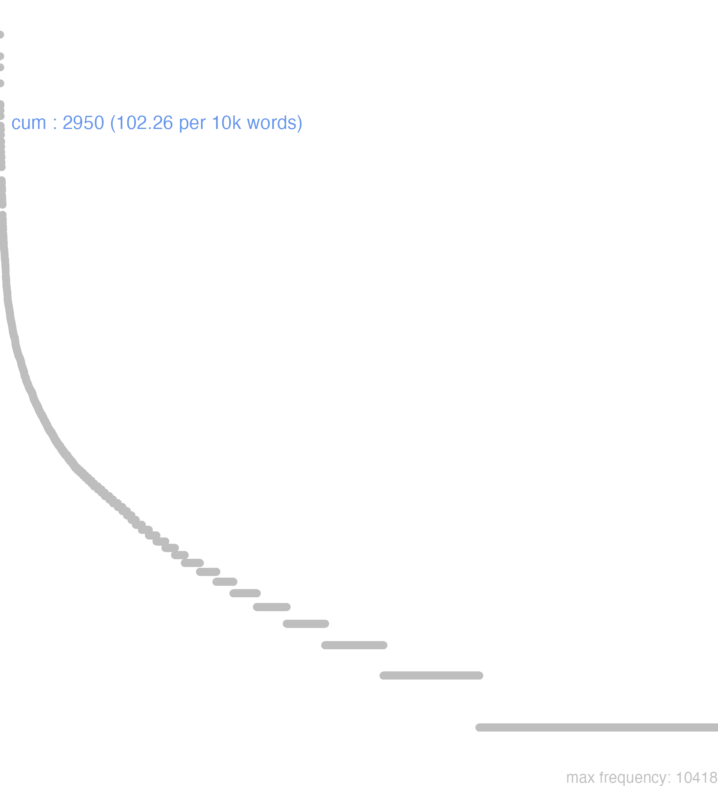

35 cum
35.0.0.1 bases lexicais
id: http://lila-erc.eu/data/id/lemma/97202
classe: conjunção subordinativa
paradigma: indeclinável
outras grafias: com, con, cun, qum, quom
variantes do lema:
no data
quŏm
no data
35.0.0.2 dicionários tradicionais
quom
v. cum. 2 cum
ou quom
conj.
Obs.: No sentido temporal a conj. cum se constrói geralmente com o indicativo, aparecendo, porém, também o subjuntivo. No sentido causal ou concessivo constrói-se unicamente com o subjuntivo.
v. cum. 2 cum
ou quom
conj.
Obs.: No sentido temporal a conj. cum se constrói geralmente com o indicativo, aparecendo, porém, também o subjuntivo. No sentido causal ou concessivo constrói-se unicamente com o subjuntivo.
1 No momento em que, quando, logo que sent. temporal Cíc. Inv. 1, 2; Cíc. Fam. 6, 4, 1; Cíc. Cat. 1, 21.
2 Visto que, pois que, desde que, já que, como sent. causal Cíc. Lac. 92; Cíc. Br. 69; Cíc. Arch. 7.
3 Ainda que, embora, posto que, conquanto sent. concessivo Cíc. Br. 26; Cíc. Verr. 2, 25.; Lucr. 5, 394.
no data
Qum
v. Cum. Quom
v. Cum.
no data
no data
35.0.0.3 dados de corpus
![This chart plots collocate by scoreSUBST, for the headword cum here are all the values plotted: collocate: tu; scoreSUBST: 0. collocate: ego; scoreSUBST: 0. collocate: qui; scoreSUBST: 0. collocate: sui; scoreSUBST: 0. collocate: is; scoreSUBST: 0. collocate: hic; scoreSUBST: 0. collocate: ille; scoreSUBST: 0. collocate: omnis; scoreSUBST: 0. collocate: magnus; scoreSUBST: 0. collocate: praesertim; scoreSUBST: 0. collocate: ipse; scoreSUBST: 0. collocate: uideo; scoreSUBST: 0. collocate: nam; scoreSUBST: 0. collocate: iam; scoreSUBST: 0. collocate: tum; scoreSUBST: 0. collocate: uenio; scoreSUBST: 0. collocate: aliquis; scoreSUBST: 0. collocate: multus; scoreSUBST: 0. collocate: ita; scoreSUBST: 0. collocate: dies; scoreSUBST: 2. collocate: una; scoreSUBST: 0. collocate: ago; scoreSUBST: 0. collocate: iste; scoreSUBST: 0. collocate: exercitus; scoreSUBST: 2. collocate: audio; scoreSUBST: 0. collocate: uos; scoreSUBST: 0. collocate: legatus; scoreSUBST: 2. collocate: ceterus; scoreSUBST: 0. collocate: hostis; scoreSUBST: 1. collocate: loquor; scoreSUBST: 0. collocate: pariter; scoreSUBST: 0. collocate: antea; scoreSUBST: 0. collocate: telum; scoreSUBST: 2. collocate: Saturninus; scoreSUBST: 0. collocate: equitatus; scoreSUBST: 2. collocate: Catilina; scoreSUBST: 0. collocate: summus; scoreSUBST: 0. collocate: domitius; scoreSUBST: 0. collocate: septimus; scoreSUBST: 0. collocate: communico; scoreSUBST: 0. collocate: licinius; scoreSUBST: 0. collocate: Brundisium; scoreSUBST: 0. collocate: ligarius; scoreSUBST: 0. collocate: semel; scoreSUBST: 0. collocate: Crassus; scoreSUBST: 0. collocate: exigo; scoreSUBST: 0. collocate: procedo; scoreSUBST: 0. collocate: proficio; scoreSUBST: 0. collocate: illa; scoreSUBST: 0. collocate: lacrima; scoreSUBST: 2. collocate: animaduerto; scoreSUBST: 0. collocate: quidni; scoreSUBST: 0. collocate: Sylla; scoreSUBST: 0. collocate: interim; scoreSUBST: 0. collocate: Scipio; scoreSUBST: 0](./Media/wordcloud__xx99-117-109xx__BY_collocate_scoreSUBST.webp)
![This chart plots collocate by scoreADJ, for the headword cum here are all the values plotted: collocate: tu; scoreADJ: 0. collocate: ego; scoreADJ: 0. collocate: qui; scoreADJ: 0. collocate: sui; scoreADJ: 0. collocate: is; scoreADJ: 0. collocate: hic; scoreADJ: 0. collocate: ille; scoreADJ: 0. collocate: omnis; scoreADJ: 0. collocate: magnus; scoreADJ: 2. collocate: praesertim; scoreADJ: 0. collocate: ipse; scoreADJ: 0. collocate: uideo; scoreADJ: 0. collocate: nam; scoreADJ: 0. collocate: iam; scoreADJ: 0. collocate: tum; scoreADJ: 0. collocate: uenio; scoreADJ: 0. collocate: aliquis; scoreADJ: 0. collocate: multus; scoreADJ: 0. collocate: ita; scoreADJ: 0. collocate: dies; scoreADJ: 0. collocate: una; scoreADJ: 0. collocate: ago; scoreADJ: 0. collocate: iste; scoreADJ: 0. collocate: exercitus; scoreADJ: 0. collocate: audio; scoreADJ: 0. collocate: uos; scoreADJ: 0. collocate: legatus; scoreADJ: 0. collocate: ceterus; scoreADJ: 0. collocate: hostis; scoreADJ: 0. collocate: loquor; scoreADJ: 0. collocate: pariter; scoreADJ: 0. collocate: antea; scoreADJ: 0. collocate: telum; scoreADJ: 0. collocate: Saturninus; scoreADJ: 0. collocate: equitatus; scoreADJ: 0. collocate: Catilina; scoreADJ: 0. collocate: summus; scoreADJ: 2. collocate: domitius; scoreADJ: 2. collocate: septimus; scoreADJ: 2. collocate: communico; scoreADJ: 0. collocate: licinius; scoreADJ: 2. collocate: Brundisium; scoreADJ: 0. collocate: ligarius; scoreADJ: 2. collocate: semel; scoreADJ: 0. collocate: Crassus; scoreADJ: 0. collocate: exigo; scoreADJ: 0. collocate: procedo; scoreADJ: 0. collocate: proficio; scoreADJ: 0. collocate: illa; scoreADJ: 0. collocate: lacrima; scoreADJ: 0. collocate: animaduerto; scoreADJ: 0. collocate: quidni; scoreADJ: 0. collocate: Sylla; scoreADJ: 0. collocate: interim; scoreADJ: 0. collocate: Scipio; scoreADJ: 0](./Media/wordcloud__xx99-117-109xx__BY_collocate_scoreADJ.webp)
![This chart plots collocate by scoreVERBO, for the headword cum here are all the values plotted: collocate: tu; scoreVERBO: 0. collocate: ego; scoreVERBO: 0. collocate: qui; scoreVERBO: 0. collocate: sui; scoreVERBO: 0. collocate: is; scoreVERBO: 0. collocate: hic; scoreVERBO: 0. collocate: ille; scoreVERBO: 0. collocate: omnis; scoreVERBO: 0. collocate: magnus; scoreVERBO: 0. collocate: praesertim; scoreVERBO: 0. collocate: ipse; scoreVERBO: 0. collocate: uideo; scoreVERBO: 2. collocate: nam; scoreVERBO: 0. collocate: iam; scoreVERBO: 0. collocate: tum; scoreVERBO: 0. collocate: uenio; scoreVERBO: 2. collocate: aliquis; scoreVERBO: 0. collocate: multus; scoreVERBO: 0. collocate: ita; scoreVERBO: 0. collocate: dies; scoreVERBO: 0. collocate: una; scoreVERBO: 0. collocate: ago; scoreVERBO: 2. collocate: iste; scoreVERBO: 0. collocate: exercitus; scoreVERBO: 0. collocate: audio; scoreVERBO: 2. collocate: uos; scoreVERBO: 0. collocate: legatus; scoreVERBO: 0. collocate: ceterus; scoreVERBO: 0. collocate: hostis; scoreVERBO: 0. collocate: loquor; scoreVERBO: 2. collocate: pariter; scoreVERBO: 0. collocate: antea; scoreVERBO: 0. collocate: telum; scoreVERBO: 0. collocate: Saturninus; scoreVERBO: 0. collocate: equitatus; scoreVERBO: 0. collocate: Catilina; scoreVERBO: 0. collocate: summus; scoreVERBO: 0. collocate: domitius; scoreVERBO: 0. collocate: septimus; scoreVERBO: 0. collocate: communico; scoreVERBO: 2. collocate: licinius; scoreVERBO: 0. collocate: Brundisium; scoreVERBO: 0. collocate: ligarius; scoreVERBO: 0. collocate: semel; scoreVERBO: 0. collocate: Crassus; scoreVERBO: 0. collocate: exigo; scoreVERBO: 2. collocate: procedo; scoreVERBO: 1. collocate: proficio; scoreVERBO: 1. collocate: illa; scoreVERBO: 0. collocate: lacrima; scoreVERBO: 0. collocate: animaduerto; scoreVERBO: 1. collocate: quidni; scoreVERBO: 0. collocate: Sylla; scoreVERBO: 0. collocate: interim; scoreVERBO: 0. collocate: Scipio; scoreVERBO: 0](./Media/wordcloud__xx99-117-109xx__BY_collocate_scoreVERBO.webp)
![This chart plots collocate by scoreADV, for the headword cum here are all the values plotted: collocate: tu; scoreADV: 0. collocate: ego; scoreADV: 0. collocate: qui; scoreADV: 0. collocate: sui; scoreADV: 0. collocate: is; scoreADV: 0. collocate: hic; scoreADV: 0. collocate: ille; scoreADV: 0. collocate: omnis; scoreADV: 0. collocate: magnus; scoreADV: 0. collocate: praesertim; scoreADV: 4. collocate: ipse; scoreADV: 0. collocate: uideo; scoreADV: 0. collocate: nam; scoreADV: 2. collocate: iam; scoreADV: 2. collocate: tum; scoreADV: 2. collocate: uenio; scoreADV: 0. collocate: aliquis; scoreADV: 0. collocate: multus; scoreADV: 0. collocate: ita; scoreADV: 2. collocate: dies; scoreADV: 0. collocate: una; scoreADV: 3. collocate: ago; scoreADV: 0. collocate: iste; scoreADV: 0. collocate: exercitus; scoreADV: 0. collocate: audio; scoreADV: 0. collocate: uos; scoreADV: 0. collocate: legatus; scoreADV: 0. collocate: ceterus; scoreADV: 0. collocate: hostis; scoreADV: 0. collocate: loquor; scoreADV: 0. collocate: pariter; scoreADV: 2. collocate: antea; scoreADV: 2. collocate: telum; scoreADV: 0. collocate: Saturninus; scoreADV: 0. collocate: equitatus; scoreADV: 0. collocate: Catilina; scoreADV: 0. collocate: summus; scoreADV: 0. collocate: domitius; scoreADV: 0. collocate: septimus; scoreADV: 0. collocate: communico; scoreADV: 0. collocate: licinius; scoreADV: 0. collocate: Brundisium; scoreADV: 0. collocate: ligarius; scoreADV: 0. collocate: semel; scoreADV: 2. collocate: Crassus; scoreADV: 0. collocate: exigo; scoreADV: 0. collocate: procedo; scoreADV: 0. collocate: proficio; scoreADV: 0. collocate: illa; scoreADV: 1. collocate: lacrima; scoreADV: 0. collocate: animaduerto; scoreADV: 0. collocate: quidni; scoreADV: 1. collocate: Sylla; scoreADV: 0. collocate: interim; scoreADV: 2. collocate: Scipio; scoreADV: 0](./Media/wordcloud__xx99-117-109xx__BY_collocate_scoreADV.webp)
![This chart plots collocate by scoreFUNC, for the headword cum here are all the values plotted: collocate: tu; scoreFUNC: 0. collocate: ego; scoreFUNC: 0. collocate: qui; scoreFUNC: 0. collocate: sui; scoreFUNC: 0. collocate: is; scoreFUNC: 0. collocate: hic; scoreFUNC: 0. collocate: ille; scoreFUNC: 0. collocate: omnis; scoreFUNC: 0. collocate: magnus; scoreFUNC: 0. collocate: praesertim; scoreFUNC: 0. collocate: ipse; scoreFUNC: 0. collocate: uideo; scoreFUNC: 0. collocate: nam; scoreFUNC: 0. collocate: iam; scoreFUNC: 0. collocate: tum; scoreFUNC: 0. collocate: uenio; scoreFUNC: 0. collocate: aliquis; scoreFUNC: 0. collocate: multus; scoreFUNC: 0. collocate: ita; scoreFUNC: 0. collocate: dies; scoreFUNC: 0. collocate: una; scoreFUNC: 0. collocate: ago; scoreFUNC: 0. collocate: iste; scoreFUNC: 0. collocate: exercitus; scoreFUNC: 0. collocate: audio; scoreFUNC: 0. collocate: uos; scoreFUNC: 0. collocate: legatus; scoreFUNC: 0. collocate: ceterus; scoreFUNC: 0. collocate: hostis; scoreFUNC: 0. collocate: loquor; scoreFUNC: 0. collocate: pariter; scoreFUNC: 0. collocate: antea; scoreFUNC: 0. collocate: telum; scoreFUNC: 0. collocate: Saturninus; scoreFUNC: 0. collocate: equitatus; scoreFUNC: 0. collocate: Catilina; scoreFUNC: 0. collocate: summus; scoreFUNC: 0. collocate: domitius; scoreFUNC: 0. collocate: septimus; scoreFUNC: 0. collocate: communico; scoreFUNC: 0. collocate: licinius; scoreFUNC: 0. collocate: Brundisium; scoreFUNC: 0. collocate: ligarius; scoreFUNC: 0. collocate: semel; scoreFUNC: 0. collocate: Crassus; scoreFUNC: 0. collocate: exigo; scoreFUNC: 0. collocate: procedo; scoreFUNC: 0. collocate: proficio; scoreFUNC: 0. collocate: illa; scoreFUNC: 0. collocate: lacrima; scoreFUNC: 0. collocate: animaduerto; scoreFUNC: 0. collocate: quidni; scoreFUNC: 0. collocate: Sylla; scoreFUNC: 0. collocate: interim; scoreFUNC: 0. collocate: Scipio; scoreFUNC: 0](./Media/wordcloud__xx99-117-109xx__BY_collocate_scoreFUNC.webp)
![This charts plots the frequency of lemma by author_Frequencies. The Hieronymus subcorpus registers the highest normalized frequency, with the value of 137.05 and an absolute frequency of 61. The Caesar subcorpus follows, with a normalized frequency of 120.86 and an absolute frequency of 320. the subcorpus with the least normalized frequency is Ovidius with the normalized value of 41.18 and an absolute freqeuncy of 24. here are all the values: subcorpus: Caesar ; normalized frequency: 320 ; absolute frequency: 120.855049475036. subcorpus: Cicero ; normalized frequency: 1852 ; absolute frequency: 115.372156188483. subcorpus: Horatius ; normalized frequency: 97 ; absolute frequency: 86.1379984015629. subcorpus: Ovidius ; normalized frequency: 24 ; absolute frequency: 41.1805078929307. subcorpus: Phaedrus ; normalized frequency: 56 ; absolute frequency: 85.0159404888417. subcorpus: Sallustius ; normalized frequency: 93 ; absolute frequency: 86.262869863649. subcorpus: Seneca ; normalized frequency: 398 ; absolute frequency: 74.2800619622627. subcorpus: Suetonius ; normalized frequency: 5 ; absolute frequency: 55.1267916207277. subcorpus: Tacitus ; normalized frequency: 16 ; absolute frequency: 54.9261929282527. subcorpus: Vergilius ; normalized frequency: 28 ; absolute frequency: 54.0540540540541. subcorpus: Hieronymus ; normalized frequency: 61 ; absolute frequency: 137.047854414738](./Media/barchart__xx99-117-109xx__lemma_BY_author_Frequencies.webp)
![This charts plots the frequency of lemma by genre_Frequencies. The Prosa.ficcional subcorpus registers the highest normalized frequency, with the value of 137.05 and an absolute frequency of 61. The Prosa.oratória subcorpus follows, with a normalized frequency of 118.67 and an absolute frequency of 1236. the subcorpus with the least normalized frequency is Poesia.trágica with the normalized value of 42.56 and an absolute freqeuncy of 49. here are all the values: subcorpus: Prosa.histórica ; normalized frequency: 434 ; absolute frequency: 105.650088853185. subcorpus: Prosa.filosófica ; normalized frequency: 572 ; absolute frequency: 94.2323849689461. subcorpus: Prosa.oratória ; normalized frequency: 1236 ; absolute frequency: 118.671569709946. subcorpus: Prosa.epistolográfica ; normalized frequency: 393 ; absolute frequency: 104.136304618564. subcorpus: Poesia.lírica ; normalized frequency: 103 ; absolute frequency: 86.6492807268445. subcorpus: Poesia.didática ; normalized frequency: 74 ; absolute frequency: 62.7703791670201. subcorpus: Poesia.trágica ; normalized frequency: 49 ; absolute frequency: 42.5642807505212. subcorpus: Poesia.épica ; normalized frequency: 28 ; absolute frequency: 54.0540540540541. subcorpus: Prosa.ficcional ; normalized frequency: 61 ; absolute frequency: 137.047854414738](./Media/barchart__xx99-117-109xx__lemma_BY_genre_Frequencies.webp)
![This charts plots the frequency of lemma by period_Frequencies. The IV.d.C. subcorpus registers the highest normalized frequency, with the value of 137.05 and an absolute frequency of 61. The I.a.C. subcorpus follows, with a normalized frequency of 111.52 and an absolute frequency of 2396. the subcorpus with the least normalized frequency is II.d.C. with the normalized value of 54.97 and an absolute freqeuncy of 21. here are all the values: subcorpus: I.a.C. ; normalized frequency: 2396 ; absolute frequency: 111.519664882476. subcorpus: I.d.C. ; normalized frequency: 472 ; absolute frequency: 72.2043750956096. subcorpus: II.d.C. ; normalized frequency: 21 ; absolute frequency: 54.9738219895288. subcorpus: IV.d.C. ; normalized frequency: 61 ; absolute frequency: 137.047854414738](./Media/barchart__xx99-117-109xx__lemma_BY_period_Frequencies.webp)
cum Acutilio sum locutus
Cic.Att.1.8.1
Falei com Acutílio. [JDD]
septima quom Catilinam emisi
Cic.Att.2.1.3
o sétimo, em que expulsei Catilina. [JDD, de outra edição]
narrabo cum aliquid habebo novi
Cic.Att.5.6.2
Contarei quando eu tiver algo de novo. [JDD]
patruus inquit meus cum Saturnino fuit
Cic.Rab.Perd.22
“Meu tio” diz ele “esteve junto com Saturnino.” [JDD]
Hirrus cum Domitio in gratia est
Cic.Att.4.16.5
Hirro está em boa relação com Domício. [JDD]
cum haec disseruissem seducit me Scaptius
Cic.Att.5.21.12
Depois de ter exposto essas coisas, Escápcio me puxa de lado. [JDD]
et cum audissent sui exierunt tenere eum
Vulg.Marc.3.21
E quando os seus ouviram isso, saíram para o deter. [JDD]
cuperem vultum videre tuum cum haec legeres
Cic.Att.4.17.4
Eu desejaria ver tua cara quando lesses estas coisas. [JDD]
praesertim cum eosdem in agros etiam deduxerit
Cic.Phil.7.17.2
Sobretudo depois que ele tiver fixado esses mesmos nos campos. [JDD]
ne tum quidem quom iri maxime debuit
Cic.Att.2.1.5
nem mesmo então, quando mais se devia ir.” [JDD, de outra edição]
ibidem ilico puer abs te cum epistulis
Cic.Att.2.12.2
E ali mesmo, um escravo com cartas tuas. [JDD]
ita enim egi te cum superioribus litteris
Cic.Att.2.25.2
pois assim tratei contigo em minha última carta. [JDD, de outra edição]
decipere est istud docere paupertatem cum diuitias promiseris
Sen.Ep.119.5
Isso é enganar, ensinar a pobreza quando prometeste riquezas.” [JDD]
cum omnia feceris a mutis animalibus decore uinceris
Sen.Ep.124.22
Depois que tiveres feito tudo, serás vencido em formosura pelos animais mudos. [JDD]
cum omnia habueris tunc habere et sapientiam uoles
Sen.Ep.17.8
Quando tiveres tudo, então vais querer ter também a sabedoria? [JDD]
utinam ille omnis se cum suas copias eduxisset
Cic.Catil.2.4.9
Quem dera ele tivesse levado consigo todas as suas tropas! [JDD]
ibi forum agit cum ego sim in provincia
Cic.Att.5.17.6
Ali ele administra a justiça, enquando eu estou na província. [JDD]
ipse triduo intermisso cum omnibus copiis eos sequi coepit
Caes.Gal.1.26.6
Ele, passados os três dias, pôs-se a segui-los com todas as suas tropas. [JDD]
loco ille motus est cum est ex urbe depulsus
Cic.Catil.2.1.11
Ele foi desalojado de sua posição, quando foi expulso da cidade. [JDD]
palam iam cum hoste nullo impediente bellum iustum geremus
Cic.Catil.2.1.12
Agora faremos abertamente uma guerra justa contra o inimigo, sem ninguém impedindo. [JDD, de outra edição]
hunc murus circumdatus arcem efficit et cum oppido coniungit
Caes.Gal.1.38.6
Um muro em torno faz dessa montanha uma cidadela e a une com a cidade. [JDD]
cum illis tamen cum salvi venerint Romae vivere licebit
Cic.Att.4.15.2
Te será permitido, contudo, viver com eles em Roma, quando chegarem sãos e salvos. [JDD]
et ait illis illa die cum sero esset factum
Vulg.Marc.4.35
E lhes disse naquele dia, quando se fez noite. [JDD]
cum satis iam perspexisse uideretur tollere incipiunt ut referrent
Cic.Ver.2.4.65.16
Quando parecia que ja tinha examinado suficientemente, começam a erguê-lo para levá-lo de volta. [JDD]
Sulla tunc erat uiolentissimus cum faciem eius sanguis inuaserat
Sen.Ep.11.4
Sula era então violentíssimo quando o sangue invadia sua face. [JDD]
et statim locutus est cum eis et dixit illis
Vulg.Marc.6.50
E ele logo falou com eles e lhes disse. [JDD]
est enim commune cum multis et cum quibusdam bonis
Cic.Cael.14
Pois ela é comum a muitos e a alguns bons. [JDD]
magna pax Antonio cum eis his item cum illo
Cic.Phil.7.23.9
Grande paz de Antônio com eles e igualmente deles com ele. [JDD]
nimis abes diu praesertim cum sis in propinquis locis
Cic.Att.2.1.4
Ficas por demasiado tempo ausente, principalmente estando em lugares próximos. [JDD]
valde eius sermo de Publio cum tuis litteris congruebat
Cic.Att.2.8.1
A conversa dele a respeito de Públio está perfeitamente de acordo com tuas cartas. [JDD]
et cetera magno cum fremitu et clamore sunt dicta
Cic.Att.2.19.3
e demais coisas foram ditas com grande frêmito e clamor. [JDD]
quibus cum prouocatio datur ne ne acta Caesaris rescinduntur
Cic.Phil.1.23.3
Quando é concedida a estes a apelação, não se rescindem as resoluções de César? [JDD]
ego in Epirum proficiscar quom primorum dierum nuntios excepero
Cic.Att.3.23.5
Eu partirei para Epiro assim que receber notícias dos primeiros dias. [JDD, de outra edição]
ita cum maximis eum rebus liberares perparuam culpam relinquebas
Cic.Deiot.10
10 Assim, liberando-o das acusações mais graves, lhe deixavas uma muito pequena culpa. [JDD]
nam de ceteris sed tamen commode quod cum Scrofa
Cic.Att.5.4.2
Pois quanto aos outros - mas ótimo o que tratasta com Escrofa. [JDD, de outra edição]
nam cum se utilem ceteris efficit commune agit negotium
Sen.Ot.3.5
Com efeito, quando se faz útil aos demais, se ocupa de um negócio público. [JDD]
Regem appellas inquam cum Rex tui mentionem nullam fecerit
Cic.Att.1.16.10
“Me chamas rei”, eu digo, “quando Rei [cunhado de Clódio] não fez nenhuma menção a ti” [no testamento]. [JDD]
satis cito dolebis cum uenerit interim tibi meliora promitte
Sen.Ep.13.10
Com suficiente rapidez vais sofrer, quando vier: enquanto isso, promete-te coisas melhores. [JDD]
qui uiginti iam annos bellum geram cum impiis ciuibus
Cic.Phil.6.17.11
Eu, que já faz vinte anos que travo guerra com ímpios cidadãos. [JDD]
at eodem te cum cenauisses rediturum dixeras itaque fecisti
Cic.Deiot.19
No entanto, tinhas dito que, depois de teres jantado, voltarias ao mesmo local e assim o fizeste. [JDD]
iam fructu artis suae fruitur ipsa fruebatur arte cum pingeret
Sen.Ep.9.7
Nesse momento ele usufrui o fruto de sua arte: enquanto pintava usufruia a própria arte. [JDD]
ipse cum primum pabuli copia esse inciperet ad exercitum uenit
Caes.Gal.2.2.2
Ele próprio, assim que começava a haver abundância de pastagem, vem até o exército. [JDD]
et cum iam hora multa fieret accesserunt discipuli eius dicentes
Vulg.Marc.6.35
E como já tinham transcorrido muitas horas, seus discípulos se aproximaram, dizendo. [JDD]
atque is primus instituit in forum uersus agere cum populo
Cic.Amici.96
e ele foi o primeiro que instituiu tratar com o povo voltado para o forum. [JDD]
nam concordiam ciuium qui habere potest nullam cum habeat ciuitatem
Cic.Phil.4.14.8
ora, como ele pode ter a concórdia dos cidadãos, se não tem nenhuma cidade? [JDD, de outra edição]
hos item ex proximis nauibus cum conspexissent subsecuti hostibus adpropinquauerunt
Caes.Gal.4.25.6
Como igualmente tivessem visto esses dos navios imediatos, seguindo-os se aproximaram dos inimigos. [JDD, de outra edição]
Milo permansit ad meridiem mirifica hominum laetitia summa cum gloria
Cic.Att.4.3.4
Milão permaneceu até meio dia, em meio a uma extraordinária alegria dos pessoas, com suma glória. [JDD]
itaque in intimis est meis cum antea notus non fuisset
Cic.Att.4.16.1
E assim ele está entre meus íntimos, embora antes não me fosse conhecido. [JDD]
quod do operam ut faciam quam minima cum illius contumelia
Cic.Att.5.17.6
o que me esforço para fazer com o menor dano possível dela. [JDD]
a quibus cum paucorum dierum iter abesset legati ab his uenerunt
Caes.Gal.4.7.2
Quando distava deles uma marcha de poucos dias, vieram legados desses. [JDD]
35.0.0.4 Diagrama de Zipf
